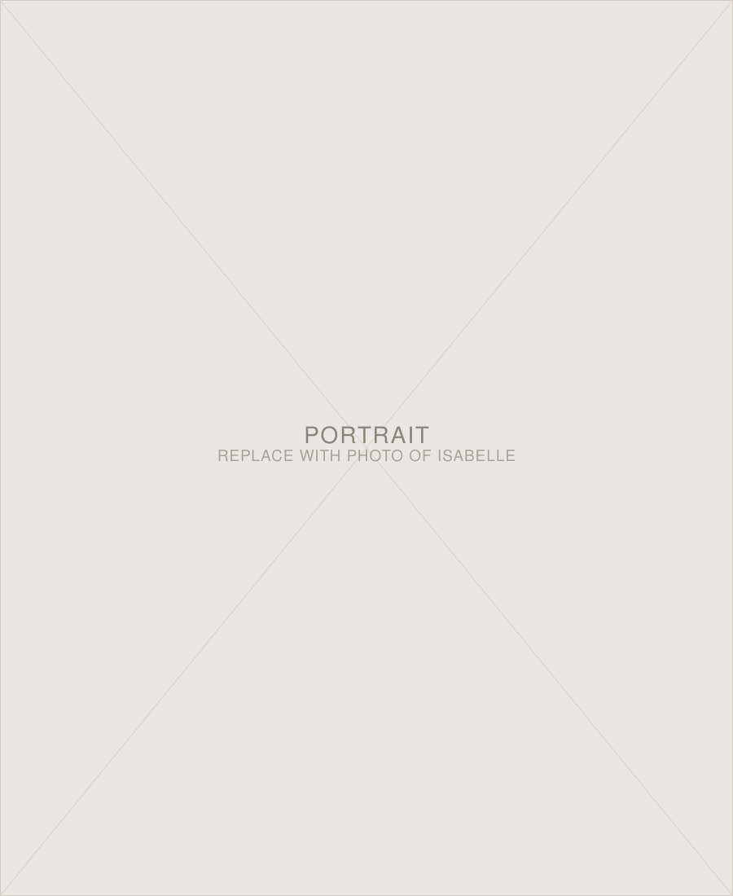

03 — About
about.

Isabelle Lee is a filmmaker, photographer, and mixed media artist based in New York and Los Angeles. Her work is driven by experimentation and a focus on capturing people in their complexity, especially those often underrepresented in media.
Isabelle studies Cinema & Media Studies at the School of Cinematic Arts, University of Southern California. More of her work can be found on her Instagram, linked below.
Based In
New York & Los Angeles
Studies
Cinema & Media Studies, USC